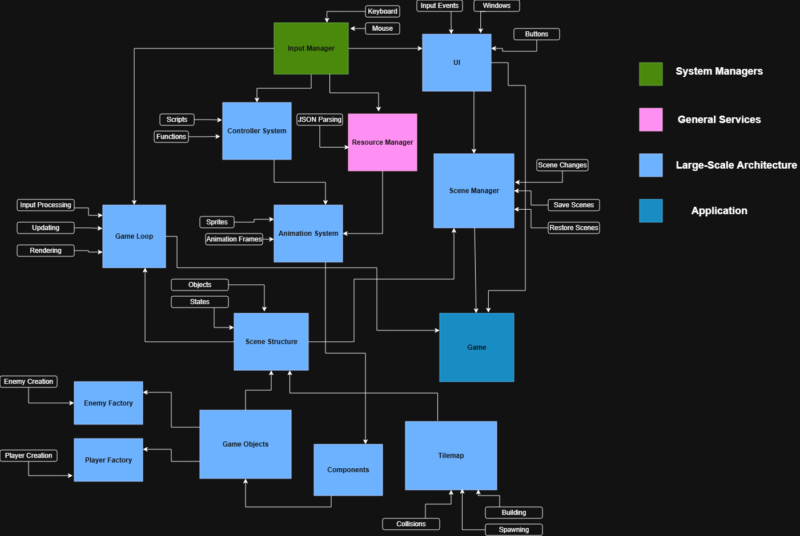

Welcome!
This is the site for Maryeva, Rit, Jen, and Chris' game engines project called Mori Engine!.
Demonstration Video
Screenshots
Engine Documentation
Engine Architecture
Download
You can download our engine from here
Run dub -- source/game.json from the 03_final project folder to start!
Post Mortem
For our project, we incorporated core game engine concepts while providing a solid foundation for users to build their own levels. The engine features an intuitive interface, and each type of game object exhibits distinct behavior, allowing for the creation of many different types of levels. Additionally, all of our sprites were drawn and designed by Chris and we curated a tileset from public tilesets, which gives our engine a unique and cohesive look. Overall, we produced a polished engine that developers can use effectively without a steep learning curve.
While our engine turned out well, several key areas that we would improve upon with additional time are code organization/modularity, level-creation tools, and the visual user interface.
One of the challenges we ran into during development was maintaining clean organization across the large amount of code needed to support the engine’s functionality. If we were to spend more time on our engine, we would focus on refactoring the code in our level editor class to make it more efficient. For instance, the collision logic for the tile map could be abstracted into that class, and the logic for spawning objects on tiles could be moved into individual object scripts or integrated directly into the tile-map class.
Another area for improvement is the creation of more advanced level-design tools. For example, implementing more advanced enemy logic and enemy movement patterns would allow users to design more challenging levels. Expanding the physics system beyond simple collisions to support elements like projectile attacks would also enhance gameplay possibilities. Additionally, being able to support multiple 2D perspectives (top-down and side-scrolling) would allow for more level design possibilities. A more complex tile-map system, such as one with multiple layers or customizable tile attributes beyond just texture, would also be a future improvement to our current systems.
Finally, having a more expansive user interface is a future goal. Ideally, the user would be able to view the entire scene hierarchy, including game objects, similar to Unity’s scene view. It is also a goal to have a visual representation of the resource manager so the user can see what textures/objects have been loaded from the JSON file. Displaying the individual components associated with each game object would further improve usability. Additionally, if layers were included in the tile map or in the scene, the corresponding UI would also need to be created to allow users to manage those layers.